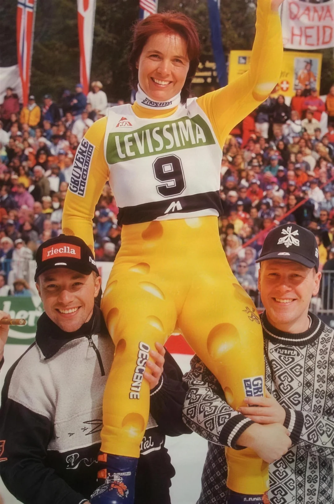
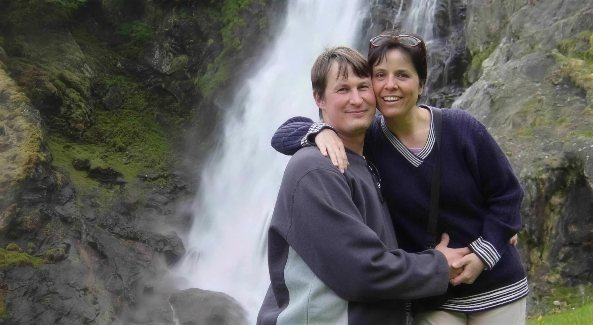
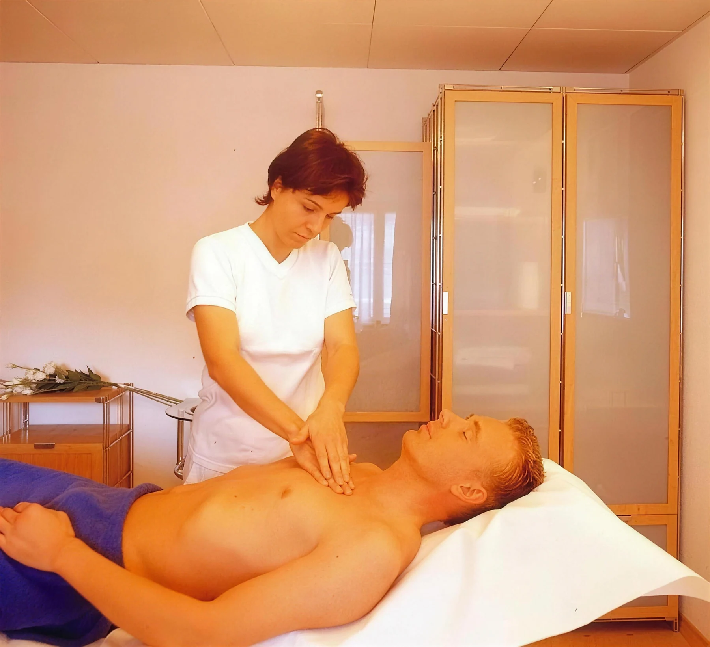

Gastgeber
Heidi Andenmatten-Zurbriggen: vierzehn Jahre Skirennen, Siege im Weltcup, zwei Silbermedaillen an Weltmeisterschaften. Und eine Karriere voller Rückschläge, in der sie nie aufgab.



Saison 1984/85
Mit siebzehn im Weltcup.
Als Juniorin holte Heidi den Weltmeistertitel und zahlreiche gute Resultate in FIS- und Europacup-Rennen. Bei ihren ersten Weltcupeinsätzen bestätigte die erst Siebzehnjährige ihr grosses Talent.
Courmayeur
Slalom
Rang 30Davos
Super-G
Rang 12Santa Caterina
Riesenslalom
Rang 12Madonna di Campiglio
Riesenslalom
Rang 21Ein Wille, der geprüft wurde.
Trainer verglichen sie mit ihrem Bruder Pirmin. Das Fundament ihrer Karriere aber waren ihr aussergewöhnlicher Wille und ihr starker Glaube.
Die Beharrlichkeit zahlt sich aus.
Zwischen 1986 und 1998 stand sie zwanzigmal auf dem Podest im Weltcup und wurde mehrfach Schweizermeisterin in Abfahrt, Super-G, Riesenslalom und Kombination.
- 1. RangAltenmarkt
- 3. RangSuper-G-Weltcup
- SilberSierra Nevada
- 1. RangLillehammer
- 3. RangAbfahrtsweltcup
- 1. RangCortina d'Ampezzo
- 1. RangBad Kleinkirchheim
- SilberSestrière
- 2. RangAbfahrtsweltcup

Crans-Montana, 1998
Der Abschied von der Rennpiste.
Am Weltcup-Final in Crans-Montana beendete die «ewige Zweite» ihre Karriere, mit einem lachenden und einem weinenden Auge. Mit ihr verliess eine Persönlichkeit die Skibühne, die trotz aller Rückschläge nie aufgab und ein grosser Rückhalt im Schweizer Damenteam war.
1998 bis heute
Was ihr half, gibt sie weiter.
- Die MethodeNach Verletzungen und Krankheit halfen ihr die Methoden von Benno Poli.
- 1998 bis 2001Ausbildung zur medizinischen Masseurin an der VDMS in Aarau.
- HeuteIhre eigene Massagepraxis in Saas-Almagell, auch für die Gäste des Chalet Rustica.
Terminkarte
Massage bei HeidiIhre eigene Massagepraxis in Saas-Almagell, auch für die Gäste des Chalet Rustica.